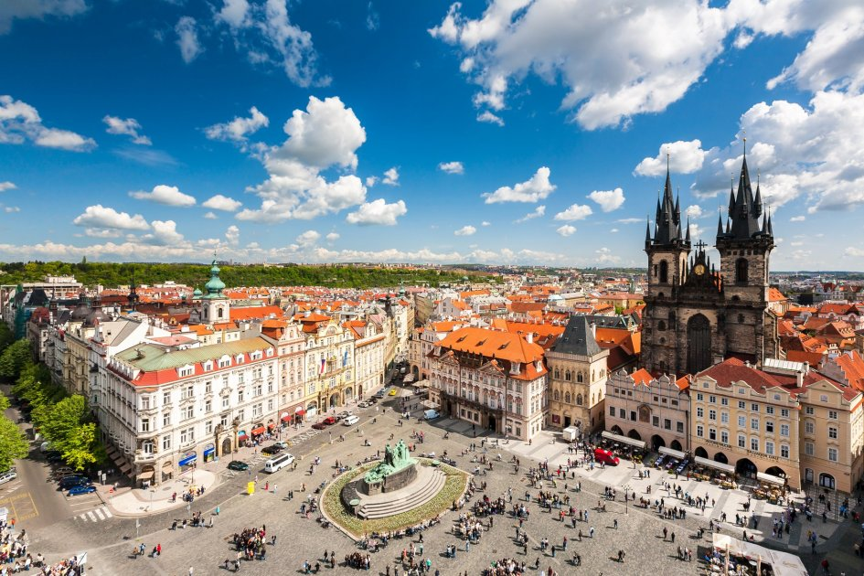

Коротка характеристика
Прага — столиця Чехії, місто з добре збереженим середньовічним центром, мостами та готичною й бароковою архітектурою.
Чому я обрав(ла) це місто
У Празі легко загубитися серед вузьких вуличок і щоразу натрапляти на щось красиве. Тут комфортно гуляти пішки, а вечірня підсвітка мостів і Граду залишає незабутнє враження.
Цікаві факти
- Будівництво Карлового мосту розпочалося у 1357 році за імператора Карла IV.
- Астрономічний годинник Орлой на Староміській ратуші встановили у 1410 році.
- Історичний центр Праги внесений до списку Світової спадщини ЮНЕСКО у 1992 році.
Визначні місця
- Карлів міст
- Празький Град
- Староміська площа з астрономічним годинником
- Вацлавська площа
Моя оцінка
9 з 10